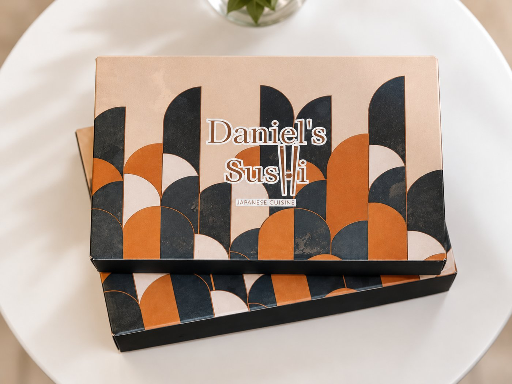
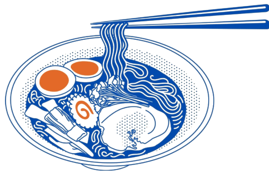
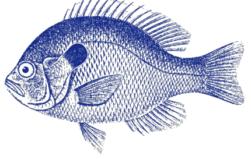

FOTO · salmone.jpg
Salmone
Crudo, scottato o marinato: in tartare, sashimi, nigiri e in quasi tutti gli special roll.
#ITALIANSUSHI · Bitetto
Roll creativi con stracciatella, pistacchio e mandorla: la cucina giapponese con un accento pugliese.
La materia prima
Il pesce crudo della tradizione giapponese, con un accento pugliese.
Crudo, scottato o marinato: in tartare, sashimi, nigiri e in quasi tutti gli special roll.
In tartare e sashimi, nei Gio Maguro e nei Maguro roll, crudo o scottato.
In tartare sopra i Gio, i nigiri e il Daniel's roll.
Vellutata, granella, crosta; e la stracciatella sull'Apulia roll.
Della casa
Interno di salmone e avocado, esterno di tartare di gambero rosso & vellutata di pistacchio.
Interno di salmone e avocado, esterno di stracciatella, gambero rosso & granella di pistacchio.
Interno di gambero in tempura e avocado, esterno di salmone, vellutata di pistacchio, teriyaki e granella di pistacchio.
Interno di salmone e formaggio francese, esterno di salmone, menta & olio extravergine.
Da condividere
Un assaggio di tutto il menù, nella nostra scatola d'asporto.

49 · 24 PZ.
4 pz. Sushi Gio, 2 pz. Nigiri, 8 pz. Uramaki salmone, 8 pz. Uramaki gambero in tempura, 2 pz. Starter.
50 · 35 PZ.
5 pz. Sashimi, 2 pz. Sushi Gio, 2 pz. Nigiri, 8 pz. Uramaki, 8 pz. Special roll a scelta dello chef, 8 pz. Hosomaki, 2 pz. Starter.
51 · 55 PZ.
5 pz. Sashimi, 4 pz. Nigiri salmone, 2 pz. Nigiri tonno, 8 pz. Uramaki, 24 pz. Special roll a scelta dello chef, 8 pz. Hosomaki, 4 pz. Starter.
Anche Crazy sushi (24 pz., 28,00 €) e Maglielano box (48 pz., 50,00 €): li trovi nel menù completo.
Il menù

Poke bowl
Cinque passaggi, dalla base al topping.
Riso bianco · Riso Venere · Insalata iceberg
Salmone crudo o scottato · Tonno crudo o scottato · Gamberi al vapore o in tempura · Pollo piastrato o in tempura · Pesce bianco · Tofu · Feta
Alga wakame · Edamame · Cetrioli · Mango · Carote · Zucchine · Mais · Avocado · Pomodorini · Olive denocciolate · Zenzero
Teriyaki · Soia · Mayo · Mayo piccante · Vellutata al pistacchio · Chutney al mango · Crema di avocado · Sweet chilli · Mayo al tartufo · Barbabietola · Mayo allo zafferano · Lime
Cipolla fritta · Granella di pistacchio · Filangé di mandorla · Kataifi · Anacardi · Sesamo · Philadelphia senza lattosio · Stracciatella · Tempura flakes · Chips di patata dolce
Prezzo della poke composta: [PREZZO]
Dove siamo
